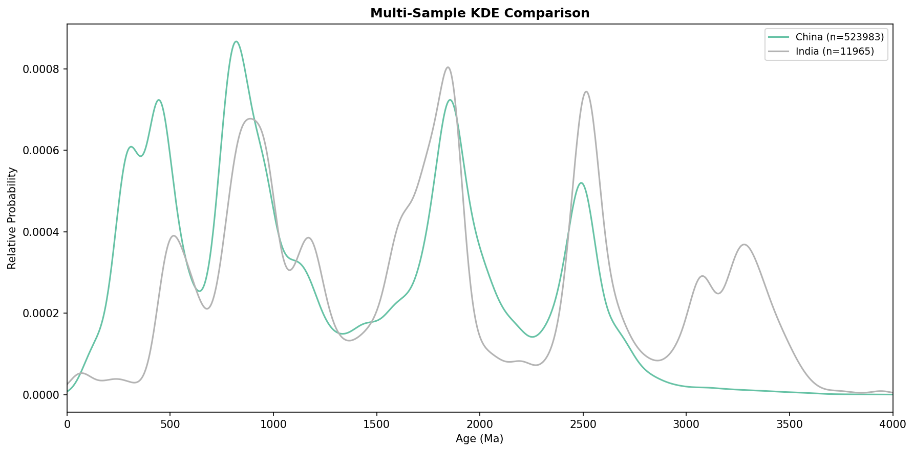
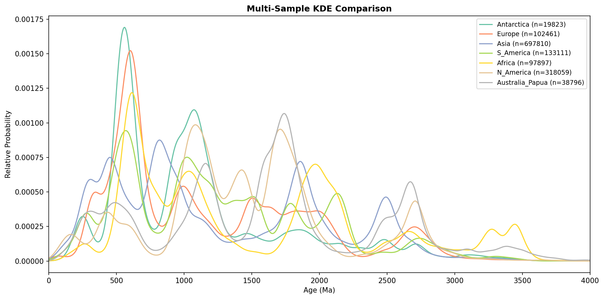

Claude Code 技能包 — 让 AI 自动分析全球锆石数据库
Author: Zhangry
本 Skill 由 Zhangry 基于以下开源数据库的 .csv 格式数据开发。
数据来源:
Li, K., Hu, X., Chai, R., Yang, J. et al. (2025): OneDZ: A Global Detrital Zircon Database and Implications for Constructing Giant Geoscience Database, Earth Syst. Sci. Data Discuss. [preprint], https://doi.org/10.5194/essd-2025-157, in review, 2025.
数据库 GitHub: KeranLi/Global-Detrital-Zircon | Zenodo: 10.5281/zenodo.17407937
OneDZ Skill 由文档层、模板层、API 层三层组成，AI 按优先级逐层调用
Skill 入口文件。AI 每次收到用户请求时首先读取此文件，获取 6 步工作流程和 API 使用规则。
Example 快速匹配表。根据用户需求关键词，匹配最合适的代码模板（如 regional_comparison）。
可复用代码模板。regional_comparison.py、grouped_comparison.py 等，AI 复制后修改参数即可。
轻量级数据索引（~50KB）。无需加载 1.5GB 数据即可查询可用国家、时期、岩石类型等。
核心 Python API。query()、clean()、analyze()、ks_test()、plot_age() 等。
API 文档层。包含 api_reference.md、quick_reference.md、workflows.md 等。
当用户输入分析请求后，AI 严格按照以下 6 步执行
每次分析任务创建独立文件夹，脚本和输出全部隔离，避免不同任务混在一起。
读取 examples_index.md 的快速匹配表，找到最相关的代码模板。
不确定参数是否存在时，读取 onedz_dataset_structure.json（~50KB），无需加载 1.5GB 数据。
Example 模板不够用时，按 quick_reference.md → api_reference.md 顺序查找。大多数情况下 Example 已足够，此步可跳过。
基于 Example 模板复制修改参数，生成完整 Python 脚本，写入任务目录后执行。AI 遵循严格的 API 规范。
所有图表（PNG）和数据（CSV）保存到任务目录。AI 从运行输出中提取结论，禁止编造未运行的结果。
匹配模板: regional_comparison.py
/onedz 对比中国和印度的锆石数据
regional_comparison.py
China vs India 锆石年龄分布 KDE 对比图
生成的文件: china_kde.png india_kde.png china_india_comparison.png china_data.csv india_data.csv
匹配模板: grouped_comparison.py — 无直接 Example 匹配场景
/onedz 全球各大洲锆石年龄分布对比
grouped_comparison.py
全球七大洲锆石年龄分布 KDE 对比图
生成的文件: all_continents_kde.png africa_kde.png asia_kde.png europe_kde.png n_america_kde.png s_america_kde.png antarctica_kde.png australia_papua_kde.png all_continents_data.csv
Skill 的核心设计理念，确保 AI 生成代码的准确性和可靠性
AI 优先从已有 Example 模板复制代码，只修改参数部分。从零编写只在无任何模板匹配时才使用。
通过 onedz_dataset_structure.json（50KB）确认参数是否存在，避免加载 1.5GB 数据后才发现国家名拼错。
强制检查 df.height > 0，使用正确的列名 "Best Age"、正确的键名 'statistic'，避免常见 API 陷阱。
每次分析创建独立目录，脚本、图表、数据全部保存在内。不同任务互不干扰。
所有分析结论必须来自脚本实际运行输出。未运行不编造，结果异常如实报告。
查找顺序: examples_index.md → examples/*.py → quick_reference.md → api_reference.md。层级越浅优先级越高。
AI 凭记忆生成代码
↓ 参数名错误: countries vs country_state
↓ 返回值错误: d_statistic vs statistic
↓ 列名错误: BestAge vs Best Age
↓ 多次迭代修正，~16 分钟
AI 查 Example 模板 → 复制修改
↓ 参数名从模板获取: country_state ✓
↓ 返回值从模板获取: statistic ✓
↓ 列名从模板获取: "Best Age" ✓
↓ 一次成功，~5 分钟